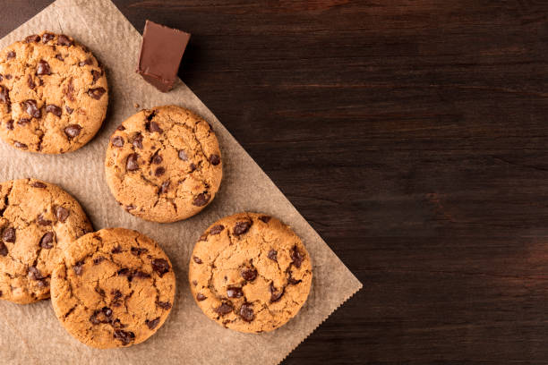

Chocolate Chip Cookies
Recipe by: Rosanna Pansino
Ingredents
- 2 1/2 cups all-purpose flour
- 2 teaspoons baking soda
- 1 teaspoon salt
- 2 sticks salted butter, room temperature
- 3/4 cup granulated sugar
- 3/4 cup light brown sugar
- 1 teaspoon vanilla extract
- 2 large eggs
- 12 ounces semisweet chocolate chips
Equipment
- Electric Mixer (hand or stand)
- Baking Sheets
Instructions!
- Preheat the oven to 375oF.
- In a medium bowl, whisk together the flour, baking soda and salt.
- In a large bowl, cream together the butter, granulated sugar, brown sugar and vanilla extract until light and fluffy.
- Add in the eggs one at a time mixing well in between each addition.
- On low speed, slowly add the dry ingredients into the wet ingredients.
- Fold in the chocolate chips.
- Place 2 tablespoonfuls of dough onto the baking sheet 2 inches apart.
- Bake in the oven for 7-9 minutes.
- Let it sit on the tray for 1 minute to cool.
- Transfer to a wire rack to cool completely.
Enjoy! :)